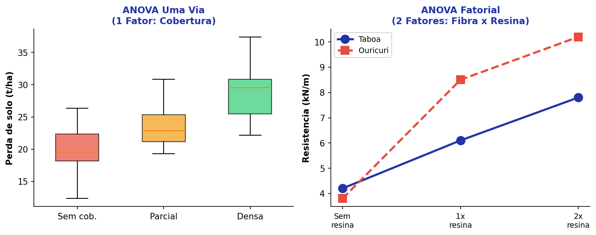
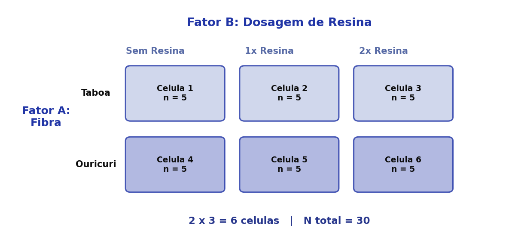
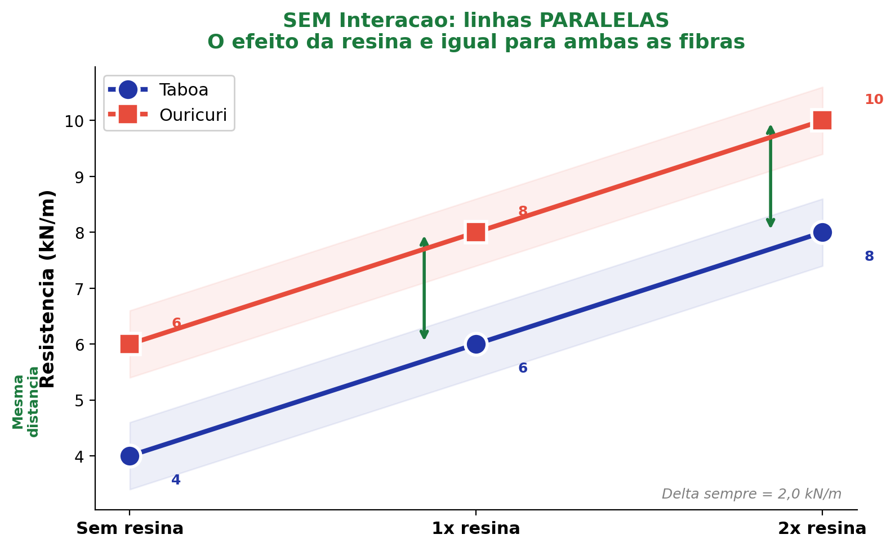
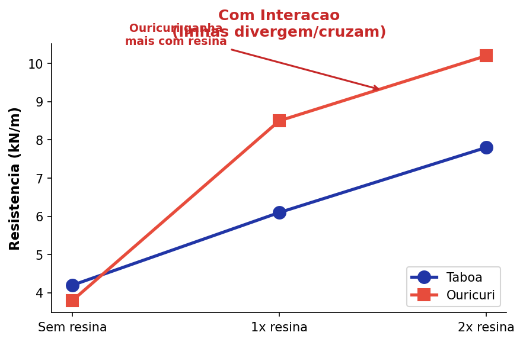
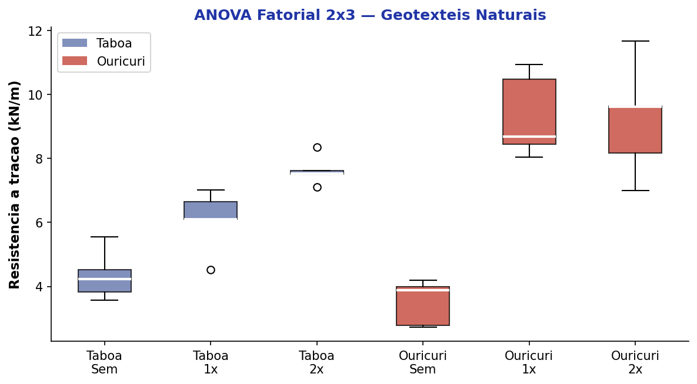
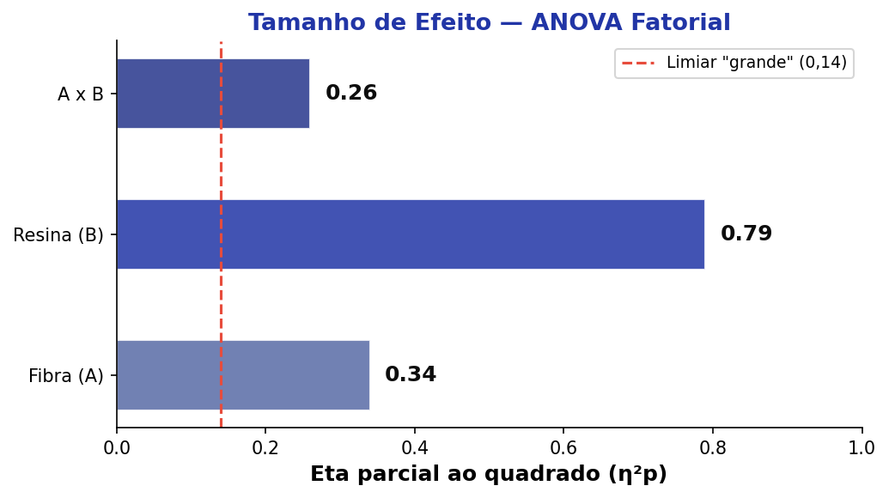

flowchart TD
A["Variância Total\n(SQ Total)"]:::root --> B["Variância Entre\n(SQ Model)"]:::node
A --> C["Variância Dentro\n(SQ Erro)"]:::node
B --> D["Efeito Principal A\n(SQ_A)"]:::leaf
B --> E["Efeito Principal B\n(SQ_B)"]:::leaf
B --> F["Interação A × B\n(SQ_AB)"]:::result
classDef root fill:#2135A6,color:#fff,font-weight:bold,stroke:#27368C
classDef node fill:#C5CEE8,color:#0D0D0D,stroke:#586BA6
classDef leaf fill:#586BA6,color:#fff,stroke:#27368C
classDef result fill:#27368C,color:#fff,font-weight:bold,stroke:#2135A6
ANOVA Fatorial
Aula 10 — Análise de Variância com Múltiplos Fatores
Análise de Dados Ambientais
Luiz Diego Vidal Santos
Roteiro da Aula
- 1 Da ANOVA Uma Via à ANOVA Fatorial
- 2 Estrutura fatorial: fatores, níveis e células
- 3 Efeitos principais e interação
- 4 Interpretando o gráfico de interação
- 5 Pressupostos
- 6 Exemplo prático — Bioengenharia de Solos
- 7 Tamanho de efeito e poder
Objetivo: Compreender a lógica da ANOVA Fatorial, que permite avaliar o efeito de dois ou mais fatores simultaneamente e verificar se existe interação entre eles.
1 — DA ANOVA UMA VIA À FATORIAL
Por que precisamos da ANOVA Fatorial?
ANOVA Uma Via
- Um único fator (variável independente)
- Ex.: Tipo de cobertura (3 níveis)
- Pergunta: As médias diferem entre os grupos?
ANOVA Fatorial
- Dois ou mais fatores simultâneos
- Ex.: Tipo de fibra × Dosagem de resina
- Perguntas:
- O Fator A influencia a VD?
- O Fator B influencia a VD?
- Existe interação A × B?
A ANOVA Fatorial é eficiente porque testa múltiplos fatores em um único modelo, economizando amostras e revelando interações que experimentos separados não detectariam.
Quando usar a ANOVA Fatorial?
O delineamento fatorial é ideal quando:
- O fenômeno depende de mais de uma variável controlada
- Há interesse em saber se os fatores interagem entre si
- Queremos economia experimental (um experimento, múltiplas respostas)
Exemplos em Ciências Ambientais
| Fator A | Fator B | VD |
|---|---|---|
| Tipo de fibra | Dosagem de resina | Resistência à tração |
| Espécie vegetal | Tipo de solo | Biomassa radicular |
| Técnica de plantio | Nível de irrigação | Taxa de sobrevivência |

2 — ESTRUTURA FATORIAL
Fatores, Níveis e Células
Terminologia
- Fator: cada variável independente categórica
- Nível: cada categoria dentro de um fator
- Célula: cada combinação única de níveis
Exemplo concreto:
| Sem Resina | 1× Resina | 2× Resina | |
|---|---|---|---|
| Taboa | Célula 1 | Célula 2 | Célula 3 |
| Ouricuri | Célula 4 | Célula 5 | Célula 6 |
- Fator A: Tipo de fibra (2 níveis)
- Fator B: Dosagem de resina (3 níveis)
- 2 × 3 = 6 células

Notação do Delineamento Fatorial
A notação indica o número de níveis de cada fator:
| Notação | Fatores × Níveis | Células |
|---|---|---|
| 2 × 2 | 2 fatores, 2 níveis cada | 4 |
| 3 × 2 | 2 fatores (3 e 2 níveis) | 6 |
| 4 × 4 | 2 fatores, 4 níveis cada | 16 |
| 4 × 4 × 2 | 3 fatores | 32 |
Cuidado com a complexidade!
Por mais tentador que seja incluir muitos fatores, lembre-se:
- As múltiplas comparações crescem exponencialmente
- A interpretação das interações de 3ª ordem é extremamente difícil
- O tamanho amostral necessário aumenta drasticamente
Na prática, delineamentos 2 × 2 e 3 × 2 são os mais comuns.
3 — EFEITOS PRINCIPAIS E INTERAÇÃO
Três Perguntas, Um Modelo
A ANOVA Fatorial decompõe a variância total em três fontes:
Efeito Principal A
O Fator A influencia a VD, ignorando B?
Ex.: A resistência difere entre as fibras (taboa vs. ouricuri), independente da resina?
Efeito Principal B
O Fator B influencia a VD, ignorando A?
Ex.: A dosagem de resina afeta a resistência, independente do tipo de fibra?
Interação A × B
O efeito de A depende do nível de B?
Ex.: O ganho de resistência com resina é diferente para taboa e ouricuri?
A interação é o resultado mais importante da ANOVA Fatorial. Quando significativa, os efeitos principais devem ser interpretados com cautela — pois o efeito de um fator depende do nível do outro.
Decomposição da Variância
Tabela ANOVA Fatorial
| Fonte | SQ | gl | QM | F |
|---|---|---|---|---|
| Fator A | SQ_A | a − 1 | QM_A | QM_A / QM_E |
| Fator B | SQ_B | b − 1 | QM_B | QM_B / QM_E |
| A × B | SQ_AB | (a−1)(b−1) | QM_AB | QM_AB / QM_E |
| Erro | SQ_E | N − ab | QM_E | — |
| Total | SQ_T | N − 1 | — | — |
Cada fonte gera seu próprio valor F e p-valor.
4 — GRÁFICO DE INTERAÇÃO
Interpretando o Gráfico de Interação

Sem interação: as linhas são paralelas. O efeito da resina é o mesmo para ambas as fibras.

Com interação: as linhas se cruzam (ou convergem/divergem). O efeito da resina depende do tipo de fibra.
Quando a interação é significativa, não basta olhar os efeitos principais isoladamente. É necessário analisar as comparações simples (simple effects) — ou seja, o efeito de um fator em cada nível do outro.
Tipos de Interação
Ordinal
As linhas não se cruzam, mas a distância entre elas varia. A direção do efeito é a mesma, mas a magnitude muda.
Desordinal (Crossover)
As linhas se cruzam. O efeito de um fator se inverte dependendo do nível do outro.
Regra prática
- Interação desordinal → efeitos principais são enganosos
- Interação ordinal → efeitos principais ainda são informativos, mas com ressalvas
5 — PRESSUPOSTOS
Pressupostos da ANOVA Fatorial
São os mesmos da ANOVA Uma Via, mas aplicados a cada célula:
| Pressuposto | Teste | Decisão |
|---|---|---|
| Normalidade | Shapiro-Wilk (por célula) | p > 0,05 → OK |
| Homocedasticidade | Levene | p > 0,05 → OK |
| Independência | Delineamento | Observações independentes |
Atenção ao tamanho amostral
Com muitas células (ex.: 4 × 4 = 16), cada célula pode ter poucas observações. Isso:
- Dificulta o teste de normalidade
- Reduz o poder do teste
- Pode gerar células vazias
Regra prática: mínimo de 5 observações por célula, ideal ≥ 10.
Se os pressupostos forem violados → ANOVA robusta (Welch) ou testes não paramétricos (Kruskal-Wallis por fatores).
6 — EXEMPLO PRÁTICO
Resistência de Geotêxteis Naturais
Delineamento: 2 × 3
- Fator A: Tipo de fibra (Taboa, Ouricuri)
- Fator B: Dosagem de resina (Sem, 1×, 2×)
- VD: Resistência à tração (kN/m)
- n = 5 por célula → N = 30
| Sem Resina | 1× Resina | 2× Resina | |
|---|---|---|---|
| Taboa | 4,2 ± 0,8 | 6,1 ± 0,9 | 7,8 ± 1,1 |
| Ouricuri | 3,8 ± 0,7 | 8,5 ± 1,2 | 10,2 ± 1,4 |

Resultados da ANOVA Fatorial
Tabela ANOVA
| Fonte | F | p-valor | η²p |
|---|---|---|---|
| Fibra (A) | 12,43 | 0,002 | 0,34 |
| Resina (B) | 45,67 | < 0,001 | 0,79 |
| A × B | 4,21 | 0,026 | 0,26 |
| Erro | — | — | — |
Interpretação
- Fibra: p = 0,002 → as fibras diferem em resistência
- Resina: p < 0,001 → a resina afeta significativamente
- Interação: p = 0,026 → o ganho com resina depende do tipo de fibra
O ouricuri beneficia-se mais da resina do que a taboa — interação ordinal.
7 — TAMANHO DE EFEITO
Eta Parcial ao Quadrado (η²p)
Definição
O η² parcial indica a proporção da variância explicada por cada fator, descontando os outros fatores:
\[\eta^2_p = \frac{SQ_{\text{efeito}}}{SQ_{\text{efeito}} + SQ_{\text{erro}}}\]
| η²p | Classificação |
|---|---|
| 0,01 | Pequeno |
| 0,06 | Médio |
| ≥ 0,14 | Grande |
(Cohen, 1988)

Diferente do η², o η² parcial permite comparar o tamanho de efeito de cada fator dentro do mesmo modelo, pois remove a variância explicada pelos demais fatores.
Resumo — Fluxo de Decisão
flowchart LR
A["≥ 2 Fatores\ncategóricos?"]:::root --> |Sim| B["VD métrica e\nnormal por célula?"]:::node
A --> |"Não"| A2["ANOVA Uma Via\n(1 fator)"]:::leaf
B --> |Sim| C["Homocedasticidade?\n(Levene)"]:::node
B --> |"Não"| B2["Transformação\nou não paramétrico"]:::leaf
C --> |Sim| D["ANOVA\nFATORIAL"]:::result
C --> |"Não"| C2["ANOVA Robusta\n(Welch)"]:::leaf
D --> E{"Interação\nsignificativa?"}:::node
E --> |Sim| F["Analisar\nefeitos simples"]:::result
E --> |"Não"| G["Interpretar efeitos\nprincipais + post-hoc"]:::result
classDef root fill:#2135A6,color:#fff,font-weight:bold,stroke:#27368C
classDef node fill:#C5CEE8,color:#0D0D0D,stroke:#586BA6
classDef leaf fill:#586BA6,color:#fff,stroke:#27368C
classDef result fill:#27368C,color:#fff,font-weight:bold,stroke:#2135A6
Obrigado!
Luiz Diego Vidal Santos
Universidade Estadual de Feira de Santana (UEFS)

UEFS | Análise de Dados Ambientais | Aula 10